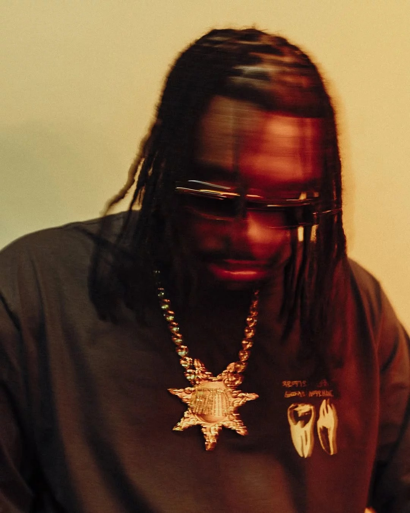
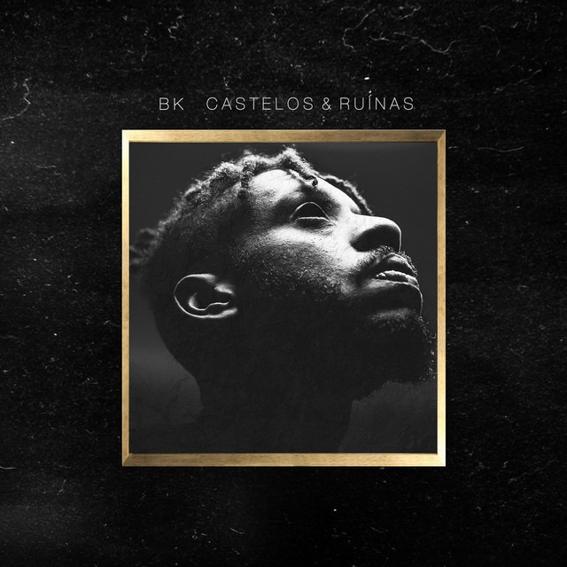
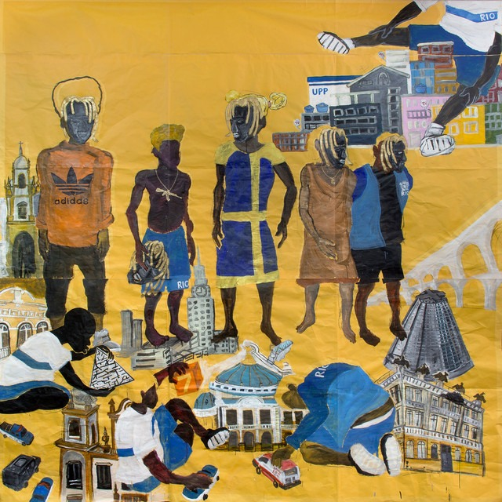
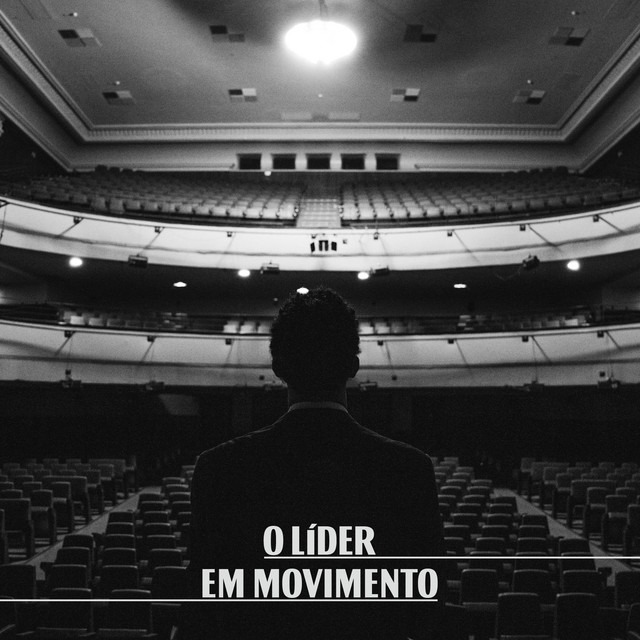
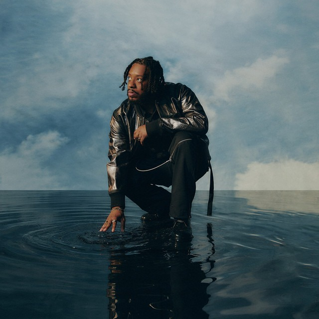
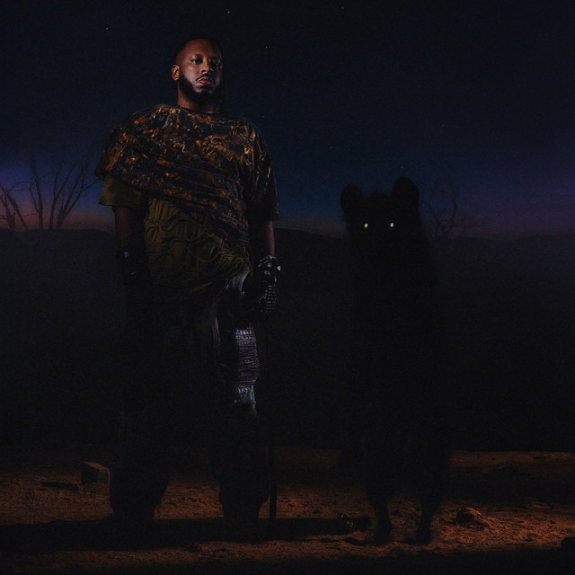

BK' (Abebe Bikila Costa Santos) é um dos rappers, compositores e escritores mais influentes do rap nacional brasileiro, carioca nascido na Cidade de Deus em 1989. Conhecido por letras profundas e reflexivas, ele se destacou com álbuns como Castelos & Ruínas (2016) e ICARUS (2022), focando na cultura hip-hop e vivências.
"O rap merece estar nos melhores e maiores lugares." — BK'
| Capa | Álbum | Ano | N° de Faixas | Gênero |
 |
Castelos & Ruínas | 2016 | 12 | Hip-Hop / Rap |
 |
Gigantes | 2018 | 13 | Hip-Hop / Rap |
 |
O Líder em Movimento | 2020 | 10 | Hip-Hop / Rap |
 |
ICARUS | 2022 | 13 | Hip-Hop / Rap |
 |
Diamantes, Lágrimas e Rostos para Esquecer | 2025 | 16 | Hip-Hop / Rap |